Experiments and Results
To contrast the two different algorithms that I decided to create, I saved data from multiple games played between the different algorithms. I then kept track of how many moves they were both able to calculate within the time limit given as well at the end of the game I also calculated the number of pioeces captured as well as territory that each of the algorithms was able to get. This would then show which AI won the game as well as on average how well each algorithm did against each other. From my findings in the Jupyter Notebook that I created was that the Monte Carlo Tree Search was able to search through a lot more moves both in the smaller boards as well as scaling up to the larger boards. It was able to reach its max exploration space when the board was 5x5, whereas the alpha beta search was not able to go through that many moves on the board and generally resulted in it picking non optimal moves. Unique to the 5x5 board, it appears as if the alpha beta algorithm actually ended up calculating less moves which makes sense as it has less moves that it needs to go through as there's only so many places you can play. On the larger boards you can see that the alpha beta algorithm starts to calculate less and less moves as it has a larger search space to go through as it increases in the amount of moves as the games go on as the game progresses as they don't have to go through as many moves for each possible moves but it was not far enough through the game for the number of free spaces left on the board would reduce the amount of moves that it calculated. For the 13x13 and 19x19 boards I was not able to go through as many moves in teh game as it took a lot longer to generate so that the moves displayed are mostly from the first half or so of the game.
 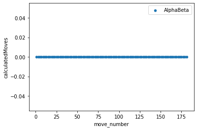
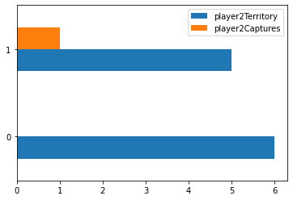
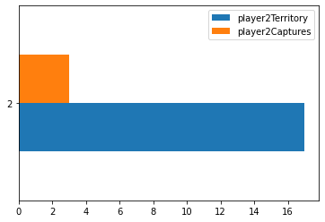
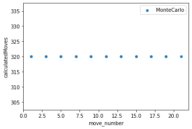
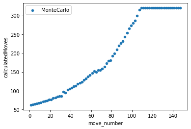
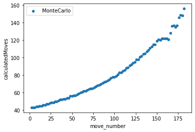
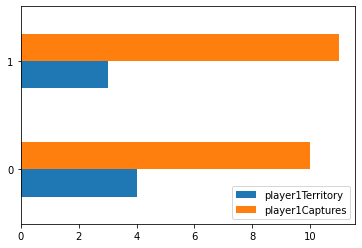
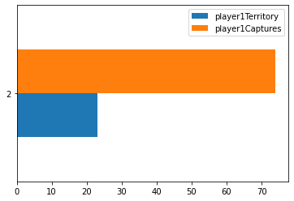
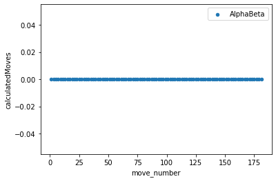
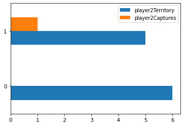
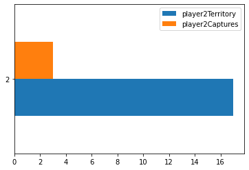
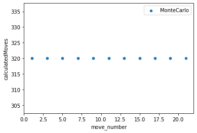
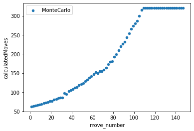
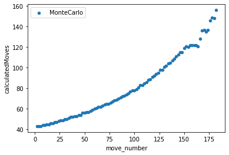
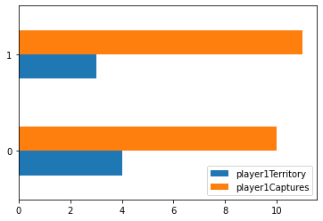
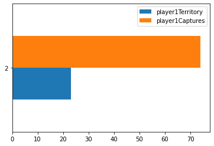